Content from Better research by better sharing
Last updated on 2025-01-27 | Edit this page
Estimated time: 40 minutes
Overview
Questions
- Who are today’s trainers?
- Why should you know about Open Science and Data Management?
- Why should you adopt good data management practices?
Objectives
- Introduce ourselves and the course
- Understand how you shape the future of research
- Understand your responsibilities to your subordinates
- Understand the changes triggered by the DORA agreement
Introductions
(3 minutes)
Testimonial
Introductions set the stage for learning.
-– Tracy Teal, Former Executive Director, The Carpentries
Hello everyone, and welcome to the FAIR for leaders workshop. We are very pleased to have you with us.
Today’s Trainers
To begin the class, each Trainer should briefly introduce themself.
Online workshop specifics
Our learning tools
Before we begin let’s explain how to use the tools:
- Raising hands
- Yes/No sticker
- Chatroom for sharing info such as links
- Breakout rooms, leaving and rejoining
- using Etherpad, answering questions in the Etherpad
- where to find things If needed, check the pre workshop setup, ask to report problems and help at a break or after the session.
Now we would like to get to learn something about you.
Who are you and what are your expectations from the workshop (4.5 min)
Please, Introduce yourselves telling each other why you have joined this course. Then, try to find one professional/academic thing that your group has in common. For example:
- we all had our latest grant proposals accepted by MRC
- we are all desperately searching for an experienced lab technician
You and data sharing (3min)
Thinking of how you and your group make data or code available to others and how your group uses others’ data, write “+1” next to any statements that match your own experience:
- We do not really share data, we only publish the results as part of a publication:
- We have made our data available only as Supporting Information for a paper:
- We have made our data available as both Supporting Information and as a dataset in a repository:
- We have made our data/code available without having it published in a paper:
- We share the code in GitHub or another code repository:
- We make the code available on demand:
- We have used a dataset from a public repository:
( 7 min teaching )
Better research by better sharing
For many of us, data management or output sharing in general are considered a burden rather than a useful activity. Part of the problem is our bad timing and lack of planning.
We will demonstrate to you:
- why you should know about Open Science, FAIR and good data management practices
- how adoption of those practices benefits yourself and your group/organization by: -- improving productivity -- speeding up inductions -- helping with your managerial responsibilities
Evolution of research and Open Science
Academic research works best by exchanging ideas and building on them. This idea underpins the Open Research movement, of which Open Science is a part. The aim is to make science more reproducible, transparent and accessible by making knowledge and data freely available. Open Science improves research by contributing to sharing of data and information and thereby leading to better-informed formulation of research questions and better-informed experimental design. In the long-run, and even in the short-term, this should lead to better, faster, more successful science. As science becomes more open, the way we conduct and communicate science changes continuously.
Digital technologies, especially the internet, have accelerated the diffusion of knowledge and made it possible to make research findings and data available and accessible to the whole of society:
- publications
- data
- physical samples
- software

After Gema Bueno de la Fuente
Open Science Building Blocks
Open Access: Research outputs hosted in a way that make them accessible for everyone. Traditionally Open Access referred to journal articles, but now includes books, chapters or images.
Open Data: Data freely and readily available to access (ie free of charge), reuse, and share (ie openly licensed). Smaller data sets were often made available as supplemental materials by journals alongside articles themselves. However, research data should be hosted in repositories (eg Zenodo, Edinburgh DataShare) where they can be given their own persistent identifier (eg DOI) to make them easily citable, and for greater findability, long-term accessibility. Sharing of data is facilitated by open licences such as Creative Commons licences, which make clear to the user what they can do with the data and what conditions apply. Trustworthy repositories assure long-term preservation and accessibility of data.
Open Software: Software where the source code is made readily available; and others are free to use, change, and share. Some examples of open-source software include the coding language R and its supporting software RStudio, as well as the image analysis software Fiji/ImageJ.
Open Notebooks: Lab & notebooks hosted online, readily accessible to all. These are popular among some of the large funding bodies and allow anyone to comment on any stage of the experimental record.
Open Peer Review: A system where peer review reports are published alongside the body of work. This can include reviewers’ reports, correspondence between parties involved, rebuttals, editorial decisions etc…
Citizen Science: Citizen participation in various stages of the research process, from project funding to collecting and analysing data. In other words, Citizen Science is when lay people become involved in scientific research, most commonly in data collection or image analysis. Platforms such as zooniverse.org help connect projects with lay people interested in playing an active role in research, which can help generate and/or process data which would otherwise be unachievable by one single person.
Scientific social networks: Networks of researchers, which often meet locally in teams, but are also connected online, foster open discussions on scientific issues. Online, many people commonly use traditional social media platforms for this, such as Twitter, Instagram, various sub-reddits, discussion channels on Slack/Discord etc…, although there are also more dedicated spaces such as researchgate.net.
Open Educational Resources (OER): Educational materials that are free of charge for anyone to access and use to learn from, and openly licensed to remove barriers to re-use. These can be anything from talks, instructional videos, and explanations posted on video hosting websites (e.g. YouTube), to entire digital textbooks written and then published freely online.
Exercise 3: Why we are not doing Open Science / Data Sharing already (3 + 2 min)
Discuss Open Science / Data Sharing barriers - what are some of the reasons for not already being open?:
- sensitive data (eg anonymising data from administrative health records can be difficult)
- IP
- I don’t know where to deposit my data
- misuse (fake news)
- lack of confidence (the fear of critics)
- lack of expertise
- the costs in £ and in time
- novelty of data
- it is not mandatory
- I don’t see value in it
- lack of credit (eg publishing negative results is of little benefit to you)
(teaching 3min) Data management is a continuous process
 Figure credits:
Tomasz Zielinski and Andrés Romanowski
Figure credits:
Tomasz Zielinski and Andrés Romanowski
Writing a Data Management Plan well can help you to share your data efficiently by identifying the stages of the research data lifecycle where you should document your data, describe your variables, capture your protocols, compile metadata, select suitable file formats. Doing this work while your research is taking place will make it far less time-consuming and more accurate. A stitch in time saves nine!
When should you engage in data sharing and open practices?
- Data management should be done throughout the duration of your projects ie throughout the data lifecycle.
- Your team need to know from the earliest stage that you support them to invest time to make data FAIR eg documenting data as they go along.
- If you wait till the end to make that clear, it will take more effort overall, reducing the relative benefit.
- Allowing for the time to do effective data management will help you and your team to understand your data better and make it easier to find when you need it (for example when you need to write a manuscript!).
- All the practices that enable others to access and use your outcomes directly benefit you and your group.
In this workshop we will show you how you can plan and do your research in a way that makes your outputs readily available for re-use by others.
Why you should know it - power figures
As a Principal Investigator you wield a certain amount of power through the decisions you make, the expectations you set for your team and the example you set.
Exercise 4. Your presence and influence (5 with Ex5)
Consider some of the ways you exert academic influence by your presence and your activity in the academic community. Which of the following reflect your own experience?
- I currently supervise at least 2 postdocs
- I have promoted at least 3 PhDs
- I revise at least 4 articles a year
- I have been a member of a grant panel
- I have been a member of a school/college/university committee
- I have contributed to development of an institutional/community policy
- I have been involved in the selection process for fellows / lecturers / readers
- I am a member of a Research Council
- Any other activities through which you exert academic influence in the research community?
=======
Exercise 5. Your minions(!)
Think about your research group. Have they done or been involved in any of the following Open Science activities?
- releasing software;
- making data available under an open licence;
- public engagement activities;
- participating in scientific community groups (eg journal club, Carpentries, ReproducibiliTea)
(teaching 8) As power figures, you all have the power to bring about a better research culture by inspiring and supporting your teams to do Open Science, and leading by example through your own actions.
Research assessment
To change the way we do science we need to change the way we measure success, and change our incentives.
San Francisco Declaration On Research Assessment (DORA)
Thousands of organisations around the world have signed DORA, including funders such as the Wellcome Trust, BBSRC and over two hundred other UK organisations. The declaration sets out a commitment to assessing research outputs based on their quality (‘intrinsic merit’). While DORA famously calls for a reduced reliance on journal-based metrics it doesn’t just cover papers, it applies to data too.
The Wellcome Trust guidance on implementing DORA states that Wellcome requires institutions it funds to “commit to assessing research outputs and other research contributions based on their intrinsic merit”. They distil the principles of DORA as follows:
“We believe that research assessment processes used by research organisations and funders in making recruitment, promotion and funding decisions should embody two core principles (‘the principles’) as set out in the San Francisco Declaration on Research Assessment (DORA):
be explicit about the criteria used to evaluate scientific productivity, and clearly highlight that the scientific content of a paper is more important than publication metrics or the identity of the journal in which it is published
recognise the value of all relevant research outputs (for example publications, datasets and software), as well as other types of contributions, such as training early-career researchers and influencing policy and practice.” -– Wellcome Trust “Guidance for research organisations on how to implement responsible and fair approaches for research assessment” https://wellcome.org/grant-funding/guidance/open-access-guidance/research-organisations-how-implement-responsible-and-fair-approaches-research
Funders like Cancer Research UK and Wellcome have updated their application processes to include not just papers but more broadly-defined achievements, public engagement and mentoring.
Narrative CVs
What is a narrative CV, and how does it relate to making data FAIR?
“…a CV format in an application that prompts written descriptions of contributions and achievements that reflect a broad range of skills and experiences. This is a change from metrics-based CVs that are primarily publication lists with employment and education history with little context.” Imperial College London
There is a growing recognition of the benefit of ‘narrative CVs’ to shifting the culture towards Open Science, even among the research funding establishment, for example see this UKRI event trailer “Supporting the community adoption of R4R-like narrative CVs” .
Prepare for FAIR, because it is easier to be well-prepared than to fake it!
It takes time to produce open outputs, but the rewards come in time saved down the line, and greater quality and findability of data in the long-run.
The quality of open outputs is easy to assess.
Timestamps on the digital systems that are now used for sharing data, code etc will show very clearly how long you’ve been doing FAIR :-)
Why you should do it
Exercise 6. Lottery winner (5)
Imagine a situation in which you suddenly lose a postdoc because she/he has won the National Lottery and won’t be coming to work any more (or more realistically, they were hit by a bus). Which of the following scenarios can you relate to?
- everything should be recorded in their notebook, which you hope is in the office.
But frankly, you have never checked how good their lab notes are.- everything should be in the team’s Electronic Lab Notebook, and you can quickly check if that is the case.
- all data, excel, presentations and paper drafts are in a shared network drive.
- some data and documents may only be in the postdoc’s PC/laptop.
- every now and then, you check people’s data and notes, so you are fairly confident they follow good practices and you know where you can find what is needed.
- your group has a “data management” policy/plan to which all members are introduced as part of their induction, so at least in principle all should be fine.
- you have left it to your group to organise such trivial matters and you’re hoping they did it well.
- your lab manager should know it all.
- there was the old postdoc who knew it all but they left last year.
- you are getting nervous!!!
Conclusion
Good research data management, FAIR data, Open Science are an integral part of scientific leadership in the modern world.
Agenda
Our agenda:
- We will talk about FAIR principles, which steps you should take so that your “shared” outputs are of value.
- We will show you how Open Science related tools like ELN, code repositories etc benefit you as a team leader
- We will show you how public repositories make your outputs accessible and reusable.
- We will consolidate our knowledge of FAIR ready data management and data management planning.
Attribution
Content of this episode was adapted from:
- Wikipedia Open Science
- European Open Science Cloud
- The Biochemist “Science is necessarily collaborative” - article.
- UKRI Supporting the community adoption of R4R-like narrative CVs
- Imperial Colleage Narrative CVs
- Wellcome Guidance for research organisations on how to implement responsible and fair approaches for research assessment
Key Points
- You are a power figure
- You need to give your ‘minions’ both practical support and leadership to help them to be equipped for Open Science going forward
- Remember, your group can do better research if you plan to share your outputs!
Content from Being FAIR
Last updated on 2025-01-27 | Edit this page
Estimated time: 30 minutes
Overview
Questions
- How can you get more value from your own data?
- What are the FAIR guidelines?
- Why does being FAIR matter?
Objectives
- Recognise typical issues that prevent data re-use
- Understand FAIR principles
- Know steps for achieving FAIR data
(5 min teaching)
We have seen how early adoption of good research data management practices can benefit your team and institution. The wide adoption of Open Access principles has resulted in access to recent biomedical publications becoming far easier. Unfortunately, the same cannot be said about research data and software that accompanies such publications.
What is research data?
“Research data are collected, observed or generated for the purpose of analysis, to produce and validate original research results… [ie] whatever is necessary to verify or reproduce research findings, or to gain a richer understanding of them” Research Data MANTRA - Research data in context, University of Edinburgh
Although scientific data comes in all shapes and sizes, we still encounter groups who (wrongly) believe they do not have data! Data does not mean only Excel files with recorded measurements from a machine. Data also includes:
- images, not only from microscopes
- information about biological materials, like strain or patient details
- recipes, laboratory and measurement protocols
- scripts, analysis procedures, and custom software can also be considered data However, there are specific recommendations on how to deal with code.
Let’s have a look how challenging it can be to access and use data from published biological papers.
Exercise 1a: Impossible protocol (5 + 3 min)
You need to do a western blot to identify Titin proteins, the largest proteins in the body, with a molecular weight of 3,800 kDa. You found a Titin-specific antibody sold by Sigma Aldrich that has been validated in western blots and immunofluorescence (‘SAB1400284’). Sigma Aldrich lists the Yu et al., 2019 paper as reference.
Challenge
Find details of how to separate and transfer this large protein in the reference paper.
- Hint 1: Methods section has a Western blot analysis subsection.
- Hint 2: Follow the references.
Would you say that the methods was Findable? Accessible? Reusable?
- Ref 17 will lead you to this paper, which first of all is not Open Access. Which not only means that some users won’t be able to read it, but even those that can access it will still be subject to restrictions on sharing content from it.
- Access the paper if you can (you may need to login to an institutional account) and find the ‘Western Blotting’ protocol on page 232 which will show the following (Screenshot from the methods section from Evilä et al 2014):
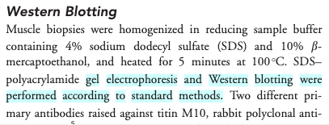
- The paper says “..Western blotting [was] performed according to standard methods.” - with no further reference to these standard methods, describing these methods, nor supplementary material detailing these methods.
- This methodology is unfortunately a true dead end and we thus can’t easily continue our experiments!
Exercise 1b: Impossible average
Ikram 2014 paper contains data about various metabolites in different accessions (genotypes) of Arabidopsis plant. You would like to calculate average nitrogen content in plants grown under normal and nitrogen limited conditions. Please calculate the average (over genotypes) nitrogen content for the two experimental conditions.
- Hint 1. Data are in Supplementary data
- Hint 2. Search for nitrogen in paper text to identify the correct data column.
- Download the supplementary data zip file.
- Open the PDF file.
- Copy and paste the data one page at a time.
- Whether trying to import the data to CSV, Excel, R, python or any
other statistical package, this source is in an incredibly inconvenient
format, as you can see in this screenshot showing what happened when we
tried to copy-and-paste the data into Excel:
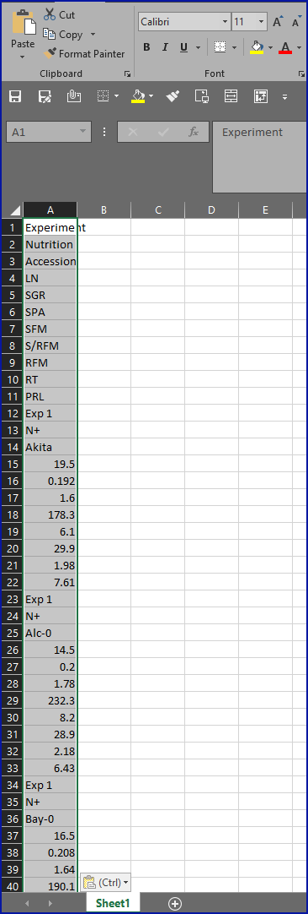
Exercise 1c: Impossible numbers
Systems biologists usually require raw numerical data to build their models. Take a look at the following example: Try to find the numerical data behind the graph shown underneath the photo of the blots in Figure 6A of Sharrock RA and Clack T, 2002 , which demonstrates changes in levels of phytochrome proteins.
- Hint 1: The ‘Materials and methods’ section describes the quantification procedure
- Hint 2: ‘Supporting Information’ or ‘Supplementary Materials’ sections often contain data files.
- Hint 3: It is considered good practice for papers to include a ‘Data Availability’ statement.
How easy was it? :-)
It appears the authors have not made the figures available anywhere, not even hidden in a supplementary information section.
Help your readers by depositing your data in an archive and including a Data Availability statement containing the data DOI in your papers!
Exercise 1d: Perplexing resource/link
RNA-seq (transcriptomics) data is usually deposited in online repositories such as SRA - Sequence Read Archive or ArrayExpress within the EBI’s BioStudies database.
Your task is to find the link to the repository containing the raw RNA-seq data described in Li et al., Genes Dev. 2012. Can you find it anywhere?
- Hint: Try Ctrl + F to use your browser’s search function to search for the word ‘data’.
Puzzlingly, the authors have chosen to include the SRA accession
number in the final sentence of the ‘Acknowledgments’ section.
Perplexingly, searching the SRA website with the accession number brings
back twelve results at the time of writing, none of which contain the
cited accession number in them, but they appear to correspond to an
experiment with a title and institutional affiliation which match the
journal article, as you can see from this screenshot:
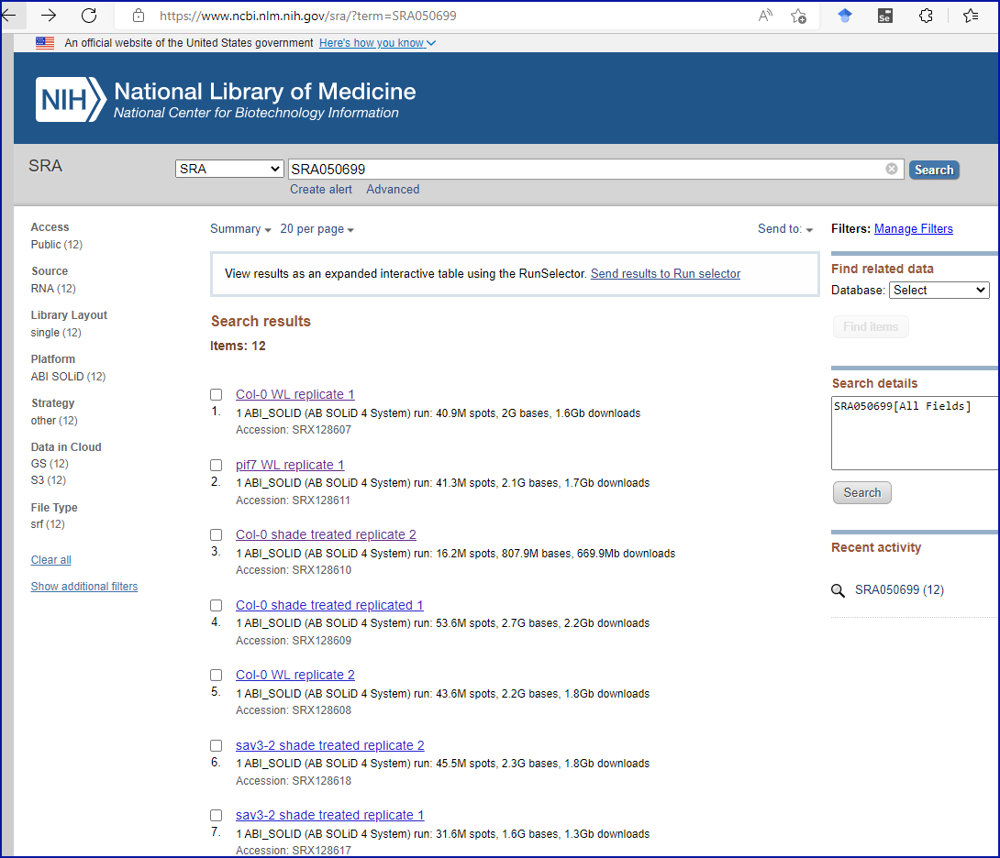
(10 min teaching)
The above examples illustrate the typical challenges in accessing
research data and software.
Firstly, data/protocols/software often do not have an identity of their
own, but only accompany a publication.
Second, they are not easily accessible or reusable; for example, when
all the details are inside one ‘supporting information’ PDF file. Such
files sometimes include “printed” numerical tables or even source code,
both of which need to be “re-typed” if someone would like to use them.
Data are shared in proprietary file formats specific to a particular
vendor and not accessible if one does not have a particular software
package that accompanies the equipment the authors used. Finally, data
files are often provided without any detailed description other than the
whole article text.
In our examples, the protocol was difficult to find (the loops), difficult to access (pay wall), and not reusable as it lacked the necessary details (dead-end).
In exercise 1b, the data were not interoperable or reusable as they were only available as a figure graph.
The FAIR principles help us to avoid such problems.
 From SangyaPundir
From SangyaPundir
{kind=link}
FAIR Principles
In 2016, the FAIR Guiding Principles for scientific data management and stewardship were published in Scientific Data. The original guidelines focused on “machine-actionability” - the ability of computer systems to operate on data with minimal human intervention. However, now the focus has shifted to making data accessible from a human perspective, and not an automated one (mostly due to the lack of user friendly tools that could help deal with standards and structured metadata).
Findable: It should be easy for both humans and computers to find data and metadata. Automatic and reliable discovery of datasets and services depends on machine-readable persistent identifiers (PIDs) and metadata.
Accessible: (Meta)data should be retrievable by their identifiers using a standardised and open communications protocol (including authentication and authorisation). Metadata should be available even when the data are no longer available.
Interoperable: Data should be able to be combined with and used with other data or tools. The format of the data should be open and interpretable for various tools. This principle, just like the others, applies both to data and metadata; (meta)data should use vocabularies that follow FAIR principles.
Re-usable: FAIR aims to optimise the reuse of data. Metadata and data should be well-described so that they can be replicated and/or combined in different settings. The conditions under which reuse of (meta)data is allowed, or the absence of conditions, should be stated with clear and accessible license(s).
What do the components of FAIR mean in (biological) practice?
Findable & Accessible
Deposit data to a trustworthy public repository.
Repositories provide persistent identifiers (PIDs), controlled vocabularies for efficient cataloguing, advanced metadata searching and download statistics. Some repositories can also host supported curation, digital preservation, private data or provide embargo periods, meaning access to all data can be delayed or restricted.
There are general “data agnostic” repositories, such as Zenodo, or domain specific ones, for example UniProt.
We will cover repositories in more detail in a later episode.
What are persistent identifiers (PIDs)?
A persistent identifier is a long-lasting reference to a digital resource. Typically it has two components:
- a service that locates the resource over time even when its location changes
- and a unique identifier (that distinguishes the resource or concept from others).
Persistent identifiers aim to solve the problem of the persistence of accessing cited resource, particularly in the field of academic literature. All too often, web addresses (links) change over time and fail to take you to the referenced resource you expected.
There are several services and technologies (schemes) that provide PIDs for objects (whether digital, physical or abstract). One of the most popular is Digital Object Identifier (DOI), recognisable by the prefix doi.org in the web links. For example: https://doi.org/10.1038/sdata.2016.18 resolves to the location of the paper that describes the FAIR principles.
Public repositories often maintain web addresses of their content in a stable form which follow the convention http://repository.adress/identifier; these are often called permalinks. For well established services, permalinks can be treated as PIDs.
For example: http://identifiers.org/SO:0000167 resolves to a page defining promoter role, and can be used to annotate part of a DNA sequence as performing such a role during transcription.
Interoperable
- Use standard or open file formats (can be domain specific)
- Always use .csv or .xlsx files for numerical data.
- Never share data tables as word or pdf,
- Provide underlying numerical data for all plots and graphs
- Convert proprietary binary formats to the open ones. For example convert Snapgene to Genbank, microscopy multistack images to OME-TIFF
Reusable
- Describe your data well / provide good metadata
- write README file describing the data
- user descriptive column headers for the data tables
- tidy data tables, make them analysis friendly
- provide as many details as possible (prepare good metadata)
- use (meta)data formats (e.g. SBML, SBOL)
- follow Minimum Information Standards
Testimonial
Describing data well is the most challenging part of the data sharing process. This topic is covered in more detail in FAIR in bio practice
- Attach license files. Licenses explicitly declare conditions and terms by which data and software can be re-used. Here, we recommend:
- for data Creative Commons Attribution (CC BY) license,
- for code a permissive open source license such as the MIT, BSD, or Apache license.
Copyright and data (extra details)
Software code (the text) automatically gets the default copyright protection by law, which prevents others from copying or modifying it. By adding an explicit license, you can declare that you permit re-use by others. By removing the need for others to contact you to ask your permission, you not only save everybody time but you also remove a barrier to equality and diversity, since all potential users can see the dataset is available for them (rather than having a situation where unequal social capital and bias, real or perceived, could hamper access).
Data, being factual, cannot be copyrighted. So why, do we need a license?
While the data itself cannot be copyrighted, the way it is presented can be. The extent to which it is protected needs ultimately to be settled by the court.
The “good actors” will refrain from using your data to avoid “court” risks. But the “bad actors” will either ignore the risk or can afford the lawyers’ fees.
Exercise 3: FAIR and You (3 + 2min)
The FAIR acronym is sometimes accompanied with the following labels:
- Findable - Citable
- Accessible - Trackable and countable
- Interoperable - Intelligible
- Reusable - Reproducible
Using those labels as hints discuss how FAIR principles directly benefit you and your team as the data creators.
- Findable data have their own identity, so they can be easily cited and secure the credits to the authors
- Data accessibility over the Internet using standard protocols can be easily monitored (for example using Google analytics). This results in metrics on data popularity or even geo-locations of data users.
- Interoperable data can benefit the future you, for example you will be able to still read your data even when you no longer have access to the specialized, vendor specific software with which you worked with them before. Also the future you may not remember abbreviations and ad-hoc conventions you used before (Intelligible).
- Well documented data should contain all the details necessary to reproduce the experiments, helping the future you or someone taking over from you in the laboratory.
- Saves time and money.
FAIR vs Open Science (3 min teaching)
FAIR does not mean Open. Actually, FAIR guidelines only require that the metadata record and not necessarily the data is always accessible. For example, the existence of the data can be known (their metadata), the data can have easy to use PID to reference them, but the actual data files may be restricted so as to be downloaded only after login and authorization.
However, if data are already in the FAIR form, i.e. accessible over the internet, in interoperable format and well documented, then it is almost effortless to “open” the dataset and make it available to the whole public. The data owner can do it any time when he no longer perceives opening as a risk.
At the same time, Open data which does not follow FAIR guidelines have little value. If they are not well described, not in open formats then they are not going to be re-used even if they were made “open” by posting them on some website.
Exercise 4: FAIR Quiz (3 min - run through break)
Which of the following statements is true/false (T or F).
- F in FAIR stands for free.
- Only figures presenting results of statistical analysis need underlying numerical data.
- Sharing numerical data as a .pdf in Zenodo is FAIR.
- Sharing numerical data as an Excel file via Github is not FAIR.
- Group website is a good place to share your data.
- Data from failed experiments are not re-usable.
- Data should always be converted to Excel or .csv files in order to be FAIR.
- A DOI of a dataset helps in getting credit.
- FAIR data must be peer reviewed.
- FAIR data must accompany a publication.
- F in FAIR stands for free. F
- Only figures presenting results of statistical analysis need underlying numerical data. F
- Sharing numerical data as a .pdf in Zenodo is FAIR. F
- Sharing numerical data as an Excel file via Github is not FAIR. F
- Group website is a good place to share your data. F
- Data from failed experiments are not re-usable. F
- Data should always be converted to Excel or .csv files in order to be FAIR. F
- A DOI of a dataset helps in getting credit. TRUE
- FAIR data must be peer reviewed. F
- FAIR data must accompany a publication. F
Key Points
- FAIR stands for Findable Accessible Interoperable Reusable
- FAIR assures easy reuse of data underlying scientific findings
Content from Tools for Oracles and Overlords
Last updated on 2025-01-27 | Edit this page
Estimated time: 0 minutes
Overview
Questions
Objectives
Tools for organizing and sharing scientific data can be also be helpful when managing resources and peoples.
Have a look some of the features of GitHub a version control system and Benchling an electronic lab notebook.
GitHub
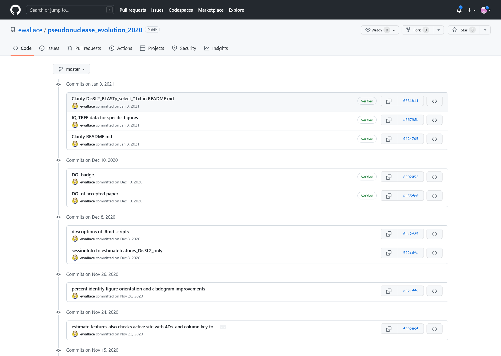
ChangeLog, screen presenting list of changes made to the project (with author and dates)
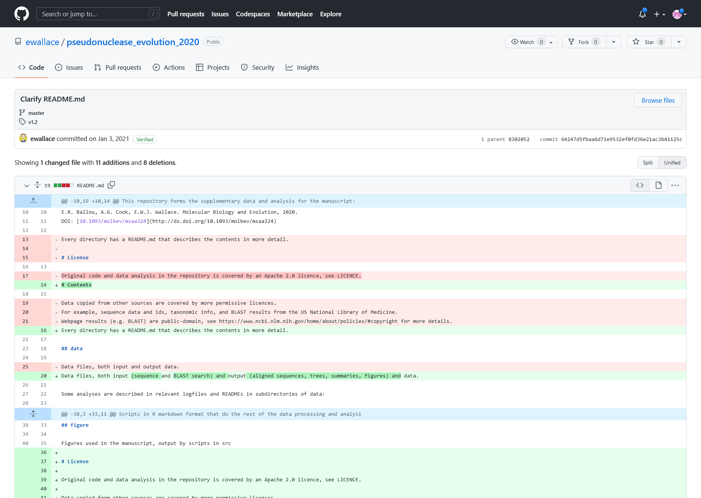
Change Entry details. Showing the description message, affected
file and the nature of change marked in colors.
The red with ‘-’ are sections which have been removed and the green with
‘+’ are new content.
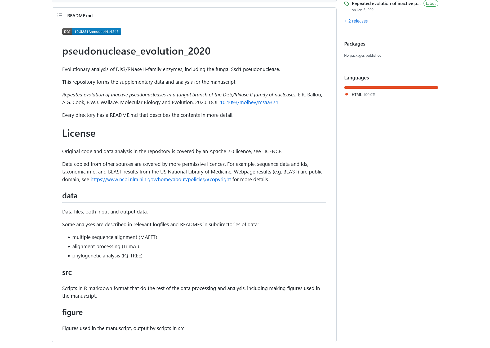
The content of readme file before applying the changes from the change log entry above
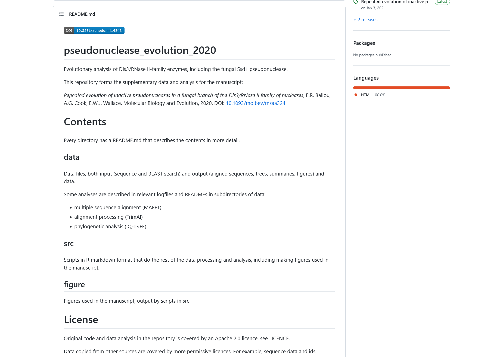
The content of readme file after applying the changes from the change log entry above
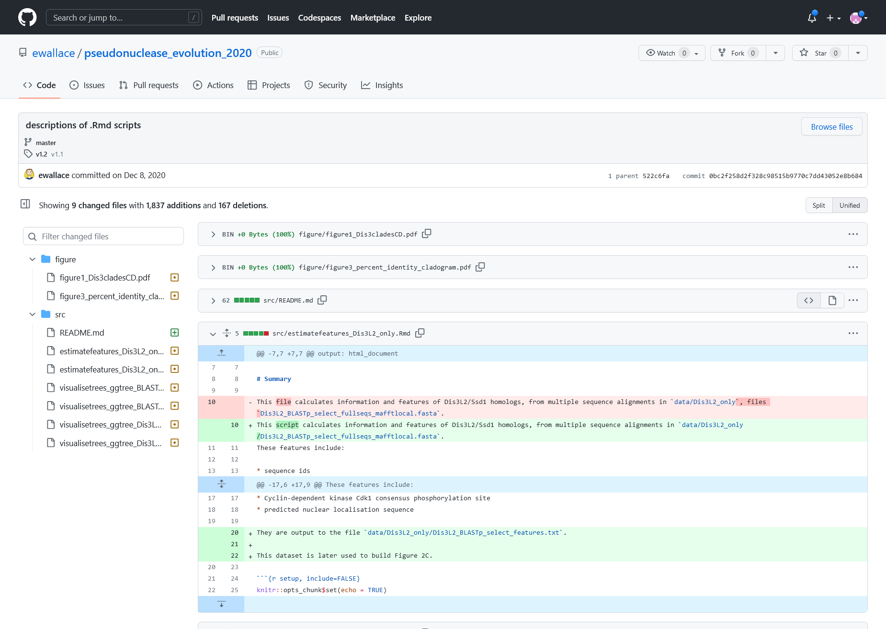
Log Entry details for a multi-file change. Affected files are listed on the left, the nature of change can be previewed in the middle panel
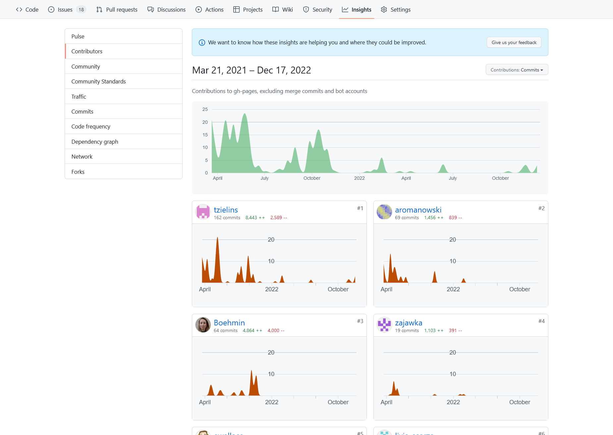
View of the activity for the development of teaching materials
for “FAIR in practice”.
There is visible summer drop of contributions due to the holiday
seasons. Then the are burst of activities just before and after of
dealivering that workshop.
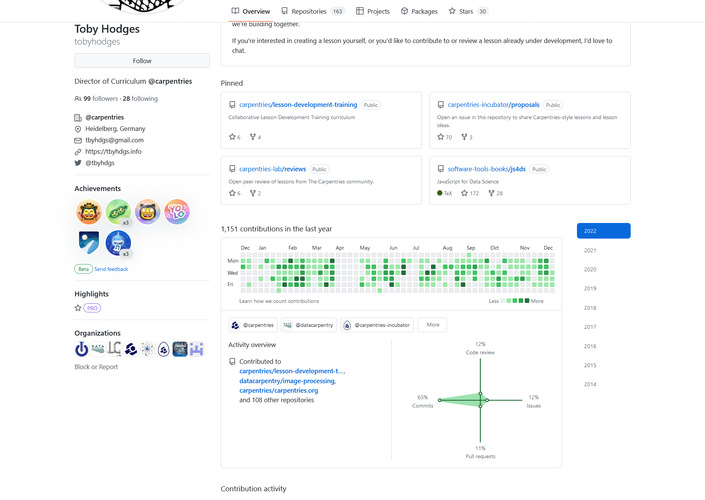
GitHub page for one of the carpentries editor, show his involvement in multiple open projects
Benchling
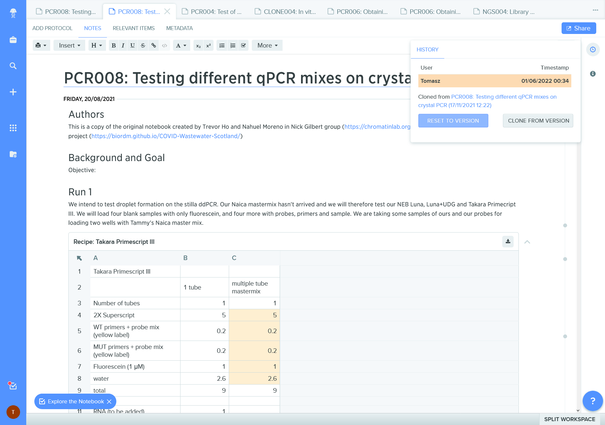
ELN record with provenance information; it is a clone ie a copy of another record
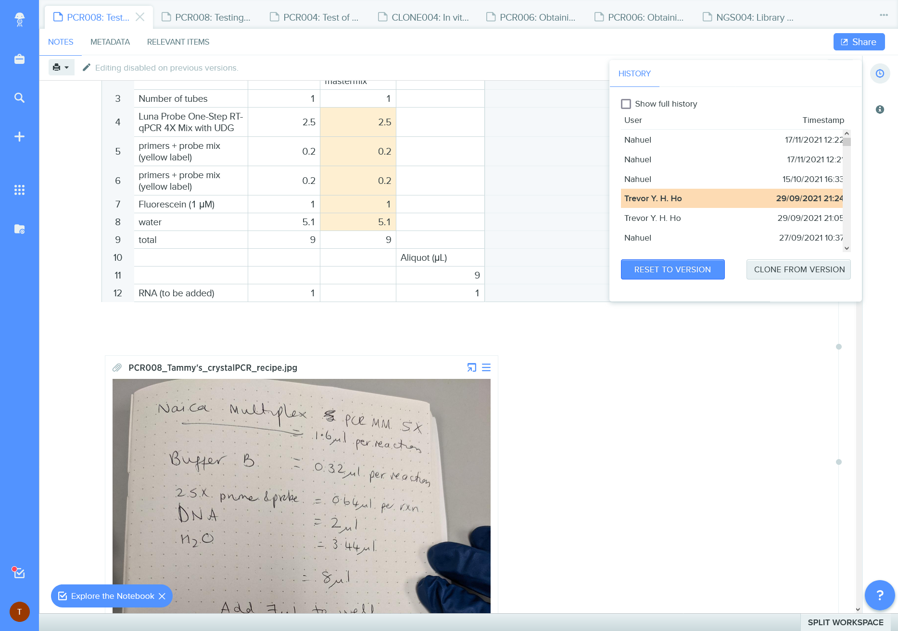
Benchling change record documents authorship of edits and permits
a quick “time travel” to the earlier versions.
It misses the description message of the changes.
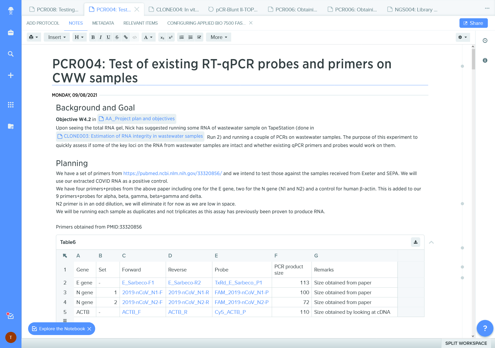
ELN records can contain links to other documents / information systems
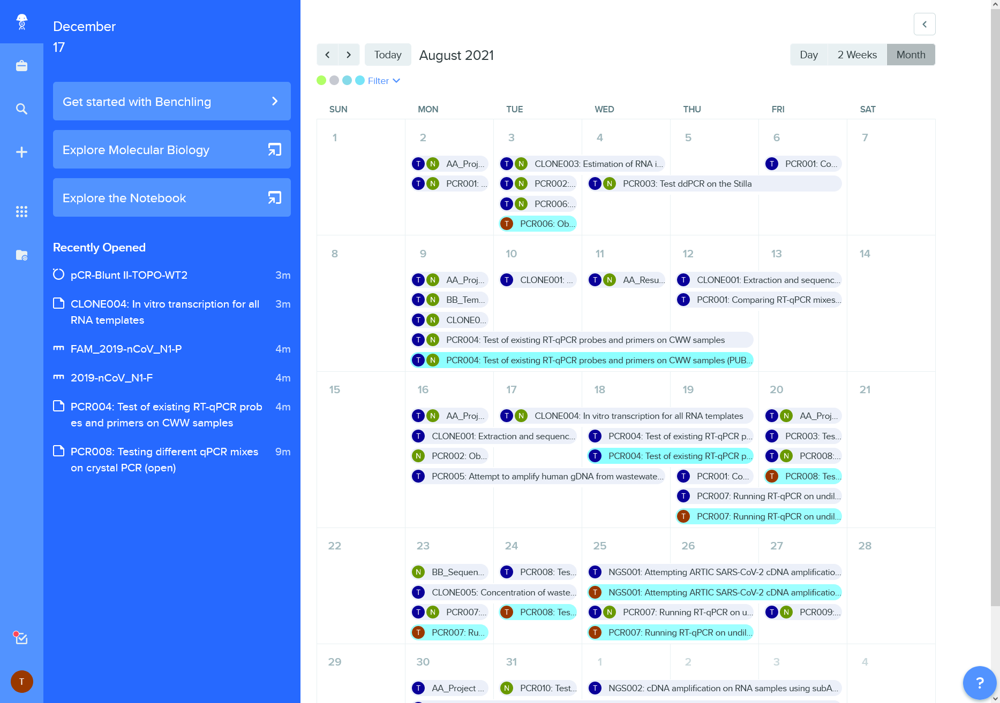
Calendar view of lab activities
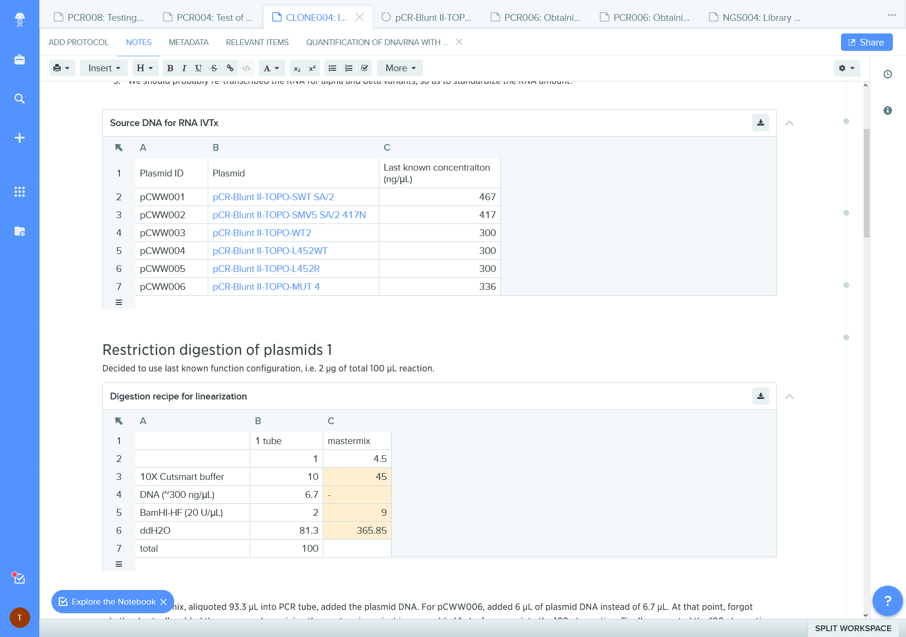
References to iventory of biological materials
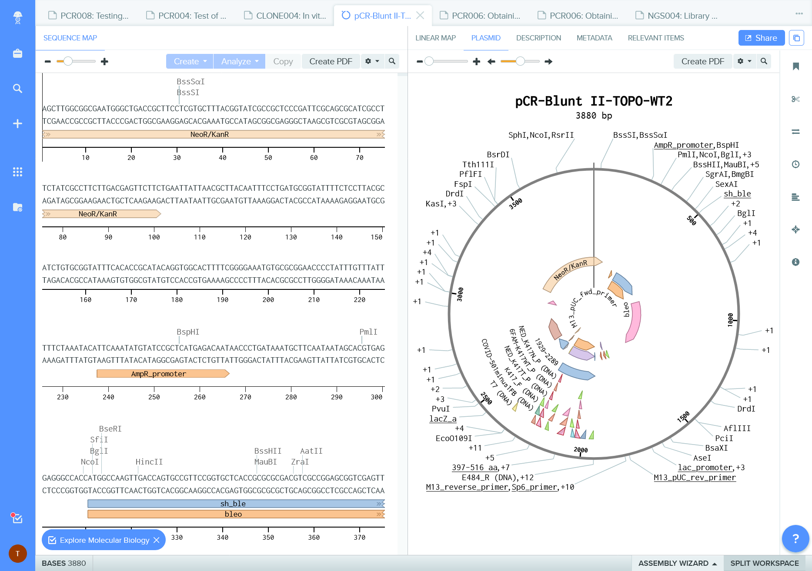
Embeded tools and visualizations for molecular biology
Content from Public repositories
Last updated on 2025-01-27 | Edit this page
Estimated time: 40 minutes
Overview
Questions
- Where can I deposit datasets?
- What are general data repositories?
- How to find a repository?
Objectives
- See the benefits of using research data repositories.
- Differentiate between general and specific repositories.
- Find a suitable repository.
What are research data repositories?
(8 min teaching) Research data repositories are online repositories that enable the preservation, curation and publication of research ‘products’. These repositories are mainly used to deposit research ‘data’. However, the scope of the repositories is broader as we can also deposit/publish ‘code’ or ‘protocols’.
There are general “data agnostic” repositories, for example:
Or domain specific, for example:
- UniProt protein data,
- GenBank sequence data,
- MetaboLights metabolomics data
- GitHub for code.
Research outputs should be submitted to discipline/domain-specific repositories whenever it is possible. When such a resource does not exist, data should be submitted to a ‘general’ repository.
Testimonial
Research data repositories are a key resource to help in data FAIRification as they assure Findability and Accessibility.
Let’s check a public general record and what makes it FAIR
Have a look at the following record for a dataset in Zenodo
repository:
Boehm et al. (2020). Confocal micrographs and complete dataset of
neuromuscular junction morphology of pelvic limb muscles of the pig (Sus
scrofa) [Data set]. In Journal of Anatomy (Vol. 237, Number 5,
pp. 827–836). Zenodo.
What elements make it FAIR?
Let’s go through each of the FAIR principles:
Findable (persistent identifiers, easy to find data and metadata):
- Principle F1. (Meta)data are assigned a globally unique and persistent identifier - YES
- Principle F2. Data are described with rich metadata (defined by R1 below)- YES
- Principle F3. Metadata clearly and explicitly include the identifier of the data they describe - YES
- Principle F4. (Meta)data are registered or indexed in a searchable resource - YES
Accessible (The (meta)data retrievable by their identifier using a standard web protocols):
- A1. (Meta)data are retrievable by their identifier using a standardised communications protocol - YES
- A2. Metadata are accessible, even when the data are no longer available - YES
Interoperable (The format of the data should be open and interpretable for various tools):
- I1. (Meta)data use a formal, accessible, shared, and broadly applicable language for knowledge representation. - YES
- I2. (Meta)data use vocabularies that follow FAIR principles - PARTIALLY
- I3. (Meta)data include qualified references to other (meta)data - YES
Reusable (data should be well-described so that they can be replicated and/or combined in different settings, reuse states with a clear license):
- R1. (Meta)data are richly described with a plurality of accurate and
relevant attributes - YES
- R1.1. (Meta)data are released with a clear and accessible data usage license - YES
- R1.2. (Meta)data are associated with detailed provenance - YES
- R1.3. (Meta)data meet domain-relevant community standards - YES/PARTIALLY
Exercise 1: Public general record (4 min)

Now, skim through the data set description (HINT there is also a README), try to judge the following:
- Is it clear what the content of the data set is?
- Is it clear why the data could be used (ie what for)?
- Is it well described?
- How confident will you be to work with this dataset?
- How easy is it to access the dataset content?
- Are your team’s datasets equally well described (or better)?
Exercise 1b: Datasets discovery (4 min instructor should search over)
Try to find either:
- data sets related to neuromuscular junction in Zenodo
- data sets of interest for you
Judge the following:
- How easy is it to find similar or interesting data sets?
- Is it clear what the content of the other data sets are?
- Is it clear why the data could be used (ie what for)?
- Are they well described?
Zenodo is a good place to keep your data separate from your paper. It
gives access to all files, allowing you to cite the data as well (or
instead of) the paper.
However, it is not ideal for discovery, and does not enforce most
metadata fields! For example, searching for ‘neuromuscular junction’
brings also Surveys of
Forest Birds on Puerto Rico, 2015
Exercise 2. Domain specific repositories (5 + 2 min).
Select one of the following repositories based on your expertise/interests:
- Have a look at mRNAseq accession ‘E-MTAB-7933’ in ArrayExpress
- Have a look at microscopy ‘project-1101’ in IDR
- Have a look at the synthethic part record ‘SubtilinReceiver_spaRK_separated’ within the ‘bsu’ collection in SynBioHub
- Have a look at the proteomics record ‘PXD013039’ in PRIDE
- Have a look at the metabolomics record ‘MTBLS2289’ in Metabolights
- Have a look at the scripts deposit ‘RNA-Seq-validation’ in GitHub
Report to the group, what advantages can you see in using a specific repository over a generalist repository like Zenodo.
Some advantages are:
- The repository is more relevant to your discipline than a generalist one.
- Higher exposure (people looking for those specific types of data will usually first look at the specific repository).
- Higher number of citations (see below).
Citation Advantage
Sharing data openly increases the number of citations of the corresponding publications - the supporting evidence base is growing:
- Report: “The Open Data Citation Advantage” SPARC Europe, February 2017 https://sparceurope.org/open-data-citation-advantage/ Shows that papers supported by openly-shared data get more citations. Includes evidence from a wide range of fields.
- “The citation advantage of linking publications to research data” (July 2019) Colavizza et al. A https://arxiv.org/abs/1907.02565 Shows that papers which linked to their data had up to 25% greater citation impact, based on comparing half a million articles from PLoS and BMC.
Extra features
It is also worth considering that some repositories offer extra features, such as running simulations or providing visualisation. For example, FAIRDOMhub can run model simulations and has project structures. Do not forget to take this into account when choosing your repository. Extra features might come in handy.
How do we choose a research data repository?
(3 min teaching) As a general rule, your research needs to be deposited in discipline/data specific repository. If no specific repository can be found, then you can use a generalist repository. Having said this, there are tons of data repositories to choose from. Choosing one can be time consuming and challenging as well. So how do you go about finding a repository:
-
Check your publisher’s (if it’s for a specific manuscript) or your funder(s)’ recommended list(s) of repositories, some of which can be found below:
Check Fairsharing recommendations (It is a very good resource for funding not only repositories but also standards, recommendations and ontologies)
alternatively, check the Registry of research data repositories - re3data
our own: BioRDM suggested data repositories
Exercise 4: Finding a repository (3 min).
Using Fairsharing or Registry of research data repositories re3data …
- Find a repo for flow cytometry data.
- Find a recommended repo for Your favourite/chosen data type.
Solution
Challenge
Fairsharing lists over two hundred recommended databases. Learners
here today may have selected different databases from each other, that’s
fine!
The BioRDM team at University of Edinburgh recommends FlowRepository and ImmPort.
Taking another research area: if you search for ‘genomics’ on
FAIRsharing, you’ll get a list of more than fifty recommended
repositories.
Whereas PLoS provides a more biologically meaningful set of suggested
Omics repositories, see screenshot below:
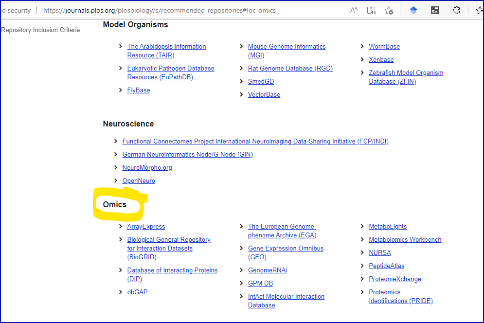
(7 min teaching including the discussion about repositories in Ex5)
A list of UoE BioRDM’s recommended data repositories can be found here.
What comes first? the repository or the metadata?
Finding a repository first may help in deciding what metadata to collect and how!
Evaluating a research data repository
You can evaluate the repositories by following this criteria:
- who is behind it, what is its funding
- quality of interaction: is the interaction for purposes of data deposit or reuse efficient, effective and satisfactory for you?
- take-up and impact: what can I put in it? Is anyone else using it? Will others be able to find stuff deposited in it? Is the repository linked to other data repositories so I don’t have to search tehre as well? Can anyone reuse the data? Can others cite the data, and will depositing boost citations to related papers?
- policy and process: does it help you meet community standards of good practice and comply with policies stipulating data deposit?
An interesting take can be found at Peter Murray-Rust’s blog post Criteria for successful repositories.
Exercise 5: Using repositories (5 min).
Discuss the following questions:
- Why is choosing (a) domain specific repository(ies) over Zenodo more FAIR?
- How can selecting a repository for your data as soon as an experiment is performed (or even before!) benefit your team’s research and help data become FAIR?
- What is the FAIRest thing to do if your publication contains multiple data types?
- What is the most surprising thing you’ve learned today?
Attribution
Content of this episode was adapted from or inspired by:
Key Points
- Repositories are the main means for sharing research data.
- You should use a data-type specific repository whenever possible.
- Repositories are the key players in data reuse.
Content from Template
Last updated on 2025-01-27 | Edit this page
Estimated time: 0 minutes
Overview
Questions
Objectives
I am episode intro
I am a section
With a text.

After Figure source
I am a yellow info
And my text.
I am codeI am a problem
Defined here.
- I am an answer.
- So am I.
Attribution
Content of this episode was adopted after XXX et al. YYY.